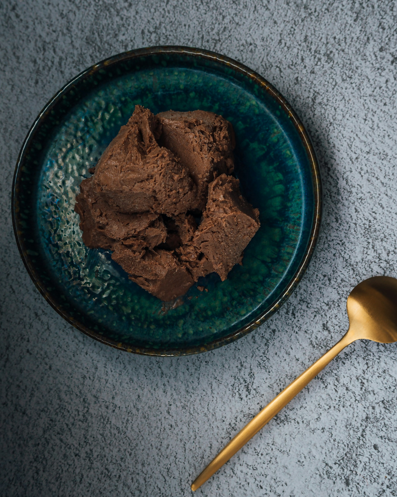

Home
Chocolate Ice Cream

Description
A homemade chocolate ice cream made with two types of chocolate blended
into a rich custard base.
The content included here has been adapted (or more accurately, copied)
from
allrecipes.com. The original recipe was submitted by Wendy. Check out
the original recipe on
the allrecipes website.
Image credit: Hanna Balan
Ingredients
- 1 cup milk
- 3/4 cup sugar
- 2 tablespoons unsweetened cocoa powder
- 1/4 teaspoon salt
- 3 egg yolk
- 2 ounces of chocolate
- 2 cups heavy Cream
- 1 teaspoon vanilla
- Gather all ingredients.
-
Combine milk, sugar, cocoa powder, and salt in a saucepan over medium
heat. Bring to a simmer, stirring constantly.
-
Place egg yolks into a small bowl. Gradually whisk in about 1/2 cup of
hot milk mixture, then return to the saucepan. Heat and stir until
thickened, but do not boil.
- Remove from the heat and stir in chopped chocolate until melted.
-
Pour into a chilled bowl and refrigerate, stirring occasionally, until
cold, about 2 hours.
-
Stir in cream and vanilla. Pour mixture into an ice cream maker and
freeze according to manufacturer’s instructions, about 20 minutes.
Transfer ice cream to an airtight container and freeze until firm.